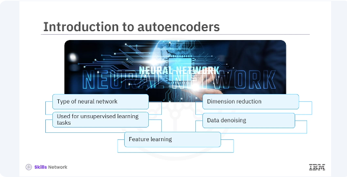
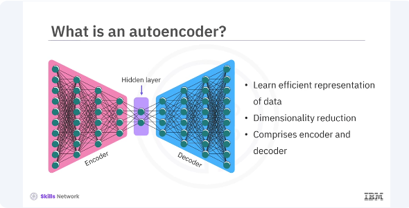
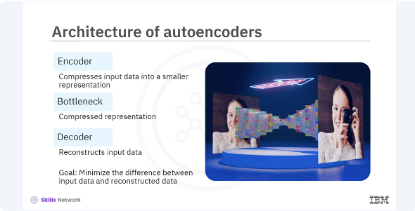
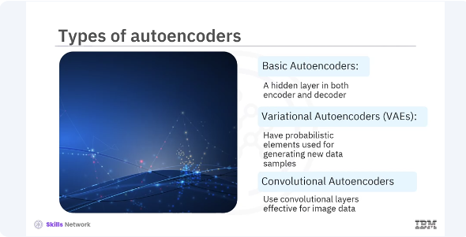
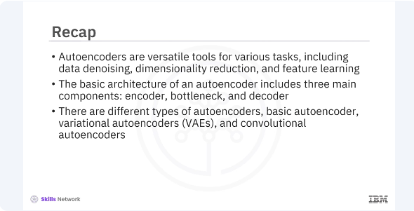

Building Autoencoders in Keras

Welcome to this video on how to build autoencoders in Keras. After watching this video, you'll be able to explain the concept of autoencoders and their applications. Demonstrate how to build and train an auto encoder using Keras. Autoencoders are a type of neural network used for unsupervised learning tasks. They are powerful tools for tasks such as dimension reduction, data denoising and feature learning. Lets explore auto encoders, their architecture and how to build and train them using keras. An autoencoder is a type of artificial neural network used to learn efficient representations of data, typically for the purpose of dimensionality reduction.

It consists of two main an encoder and a decoder.

To explain further, the basic architecture of an autoencoder includes three main components. Encoder compresses the input data into a smaller representation, bottleneck the compressed representation that contains the most important features. Decoder reconstructs the input data from the compressed representation. The goal is to minimize the difference between the input data and the reconstructed data.

There are several types of autoencoders, each serving different purposes. Basic autoencoders, simple structure with one hidden layer in both encoder and decoder. Variational autoencoders, VAEs, introduce probabilistic elements and are used for generating new data samples. Convolutional auto encoders use convolutional layers and are highly effective for image data.
pyenv activate venv3.14.0
import tensorflow as tf
from tensorflow.keras.models import Model
from tensorflow.keras.layers import Input, Dense
# Encoder
input_layer = Input(shape=(784,))
encoded = Dense(64, activation='relu')(input_layer)
# Bottleneck
bottleneck = Dense(32, activation='relu')(encoded)
# Decoder
decoded = Dense(64, activation='relu')(bottleneck)
output_layer = Dense(784, activation='sigmoid')(decoded)
# Autoencoder model
autoencoder = Model(input_layer, output_layer)
# Compile the model
autoencoder.compile(optimizer='adam', loss='binary_crossentropy')
# Summary of the model
autoencoder.summary()
Lets build a basic autoencoder in Keras using the functional API. You will use the minced data set in the example. In this code you define an autoencoder with an input layer of 784 neurons for the flattened 28 x 28 images, an encoder that reduces it to 64 dimensions, a bottleneck of 32 dimensions and a decoder that reconstructs the input back to 784 dimensions. You compile the model using the atom optimizer and binary cross entropy loss.
from tensorflow.keras.datasets import mnist
import numpy as np
# Load and preprocess the dataset
(x_train, _), (x_test, _) = mnist.load_data()
x_train = x_train.astype('float32') / 255.
x_test = x_test.astype('float32') / 255.
x_train = x_train.reshape((len(x_train), np.prod(x_train.shape[1:])))
x_test = x_test.reshape((len(x_test), np.prod(x_test.shape[1:])))
# Train the model
autoencoder.fit(x_train, x_train,
epochs=50,
batch_size=256,
shuffle=True,
validation_data=(x_test, x_test))
Next you will prepare the minced dataset and train your autoencoder. In this example, you load and preprocess the minced dataset by normalizing the pixel values and reshaping the images to a single vector. You then train the autoencoder using the training data as both the input and the output, aiming to reconstruct the input data.
# Unfreeze the top layers of the encoder
for layer in autoencoder.layers[-4:]:
layer.trainable = True
# Compile the model again
autoencoder.compile(optimizer='adam', loss='binary_crossentropy')
# Train the model again
autoencoder.fit(x_train, x_train,
epochs=10,
batch_size=256,
shuffle=True,
validation_data=(x_test, x_test))
In addition to using the autoencoder as is, you can also fine tune it by training some layers while keeping others frozen. This helps in adapting the autoencoder to new data or improving its performance. In the code, you unfreeze the last four layers of the autoencoder and recompile the model. Training the model again for a few more epochs can help fine tune the autoencoder.

In this video, you learned autoencoders are versatile tools for various tasks, including data denoising, dimensionality reduction, and feature learning. The basic architecture of an autoencoder includes three main encoder, bottleneck, and decoder. There are different types of autoencoders, basic autoencoder, variational autoencoders,VAEs, and convolutional autoencoders.